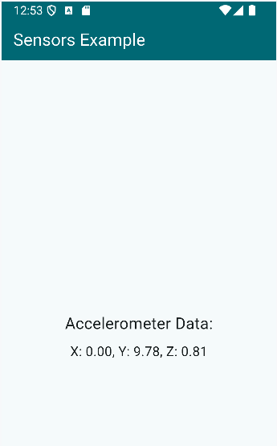
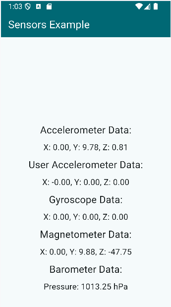

Unit 5.4. Mobile sensors with Flutter
Overview
Flutter provides access to various device sensors through plugins available on pub.dev. These plugins allow you to read data from sensors such as accelerometers, gyroscopes, magnetometers, and more.
We are going to use the package sensors_plus, which provides a simple way to access sensor data in Flutter applications. The sensor available in this package include:
- Accelerometer: describes the acceleration of the device, in m/s2, including the effects of gravity. Unlike
UserAccelerometerEvent, this stream reports raw data from the accelerometer without any post-processing. The accelerometer is unable to distinguish between the effect of an accelerated movement of the device and the effect of the surrounding gravitational field. This means that, at the surface of Earth, even if the device is completely still, the reading of AccelerometerEvent is an acceleration of intensity 9.8 directed upwards (the opposite of the graviational acceleration). This can be used to infer information about the position of the device (horizontal/vertical/tilted). AccelerometerEvent reports zero acceleration if the device is free falling. - User Accelerometer: describes the acceleration of the device, in m/s2. If the device is still, or is moving along a straight line at constant speed, the reported acceleration is zero. If the device is moving e.g. towards north and its speed is increasing, the reported acceleration is towards north; if it is slowing down, the reported acceleration is towards south; if it is turning right, the reported acceleration is towards east. The data of this stream is obtained by filtering out the effect of gravity from
AccelerometerEvent. - Gyroscope: describes the rotation of the device.
- Magnetometer: describes the ambient magnetic field around the device. A compass is an example usage of this data.
- Barometer: describes the ambient air pressure around the device, in hPa. An altimeter is an example usage of this data. Not supported on web browsers.
The page Flutter Gems has a list of sensor packages that you can explore for more options, like light, infrared, movement etc.
Installing Sensor Packages
1 | |
The pubspec.yaml file should now include the sensors_plus package under dependencies:
1 2 3 4 | |
On iOS you must also include a key called NSMotionUsageDescription in your app's Info.plist file. This key provides a message that tells the user why the app is requesting access to the device’s motion data. The plugin itself needs access to motion data to get barometer data.
Example Info.plist entry:
1 2 | |
Using Sensors in Flutter
We are starting with a simple example that reads accelerometer data and displays it on the screen.
First, setup the main function and MyApp class:
1 2 3 4 5 6 7 8 9 10 11 12 13 14 15 16 17 18 19 20 21 | |
As seen in previous exercises, you can put the MyApp class in a separate file if you want.
In the sensors_screen.dart file, we will create a stateful widget that listens to accelerometer events and updates the UI accordingly.
1 2 3 4 5 6 7 8 9 10 11 12 13 14 15 16 17 | |
Inside the _SensorsScreenState class, we will define variables to hold the accelerometer data and a subscription to listen to accelerometer events.
1 2 3 4 5 6 7 8 | |
The values are stored in the _accelerometerValues list, and the subscription is stored in _accelerometerSubscription. This variable is declared as late because it will be initialized in the initState method.
Next, we will initialize the subscription in the initState method to listen to accelerometer events:
1 2 3 4 5 6 7 8 9 10 11 | |
Note that we call setState to update the UI instead of using providers or other state management solutions for simplicity.
When the screen is disposed of, we need to cancel the subscription to avoid memory leaks:
1 2 3 4 5 6 7 8 9 | |
Finally, we will build the UI to display the accelerometer data:
1 2 3 4 5 6 7 8 9 10 11 12 13 14 15 16 17 18 19 20 21 22 23 24 25 26 27 28 29 30 31 32 33 34 35 | |
This code builds a simple UI with an AppBar and a body that displays the accelerometer data. The data is formatted to two decimal places for better readability.
If you are running this on the Andoid Studio emulator, you can simulate accelerometer data by using the "Extended Controls" menu (three dots icon) and navigating to the "Sensors" section. Here, you can adjust the accelerometer values to see how your app responds.

Task
Complete the app to also display user accelerometer, gyroscope, magnetometer and barometer data. You will need to create additional subscriptions for these sensors, dispose them and update the UI accordingly.
